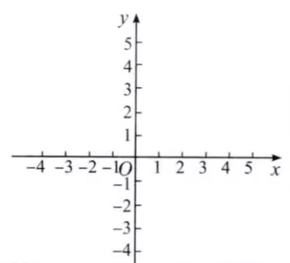
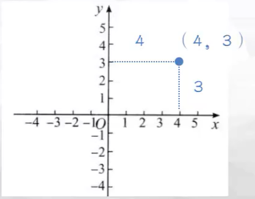
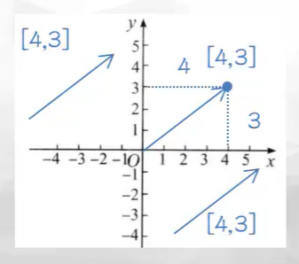
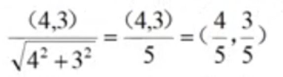
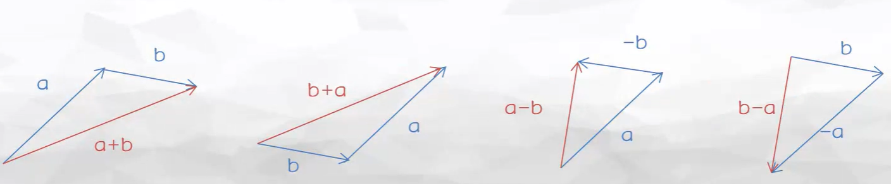
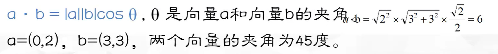

unity中的二位坐标系就是Vector2
任意两个数轴相交就能确定一个平面，相交于原点的数轴，构成了平面放射坐标系
两个数轴由原点（0点）相交而且两个数轴单位长度一样，我们就可以称呼这种坐标系为笛卡尔坐标系
相交于原点而且是垂直相交的数轴我们称为笛卡尔直角坐标系
笛卡尔直角坐标系也是最常用的坐标系，也是unity的Vector2所代表的坐标系
在2D笛卡尔坐标系中，我们用（x,y）来表示一个点。称之为坐标。坐标的每个分量都表明了该点与原点之间的距离和方位。每个分量都是到相应轴的有符号距离
3D:关于3D空间的数学
从2D扩展到3D:相对于2D笛卡尔坐标系，我们需要3个轴来表示三维坐标系，一般叫做空间直角坐标系
第3个轴一般被称为Z轴。一般情况下，3个轴互相垂直。
屏幕坐标系是建立在屏幕上的二位坐标系
以像素来定义的，屏幕的左下角为（0,0），右上角为（Screen.width，Screen.height），z轴的坐标是相机的世界坐标中z轴坐标的负值
鼠标位置坐标属于屏幕坐标，通过Input.mousePosition可以获得该位置的坐标
手指触摸屏幕也为屏幕坐标，Input.GetTouch(0).position可以获得单个手指触摸屏幕时手指的坐标
transform.Translate(translate:Vector3,relativeTo:Space=Space.Self)
沿着transform的方向移动|translate|的距离，其结果将应用到relativeTo坐标系中。如果relativeTo为空，则默认为局部坐标系
transform常用坐标转换方法
| 方法名 | 说明 |
| transform.TransformPoint(Vector3 position) | 将一个坐标点从局部坐标系转换到全局坐标系 |
| transfrom.InverseTransformPoint(Vector3 position) | 将一个坐标点从全局坐标系转换到局部坐标系 |
| transform.TransformDirection(Vector3); | 将一个方向从局部坐标系转换到全局坐标系 |
| transform.InverseTransformDirection(Vector3 direction) | 将一个方向从全局坐标系转换到局部坐标系 |
| transform.TransformVector(Vector3 vector) | 将一个向量从局部坐标系转换到全局坐标系 |
| transform.InverseTransformVector(Vector3 vector) | 将一个向量从全局坐标系转换到局部坐标系 |
屏幕坐标转换常用方法
| 方法名 | 说明 |
| Camera.ScreeToWorldPoint(Vector3 position) | 将屏幕坐标转换为全局坐标 |
| Camera.WorldToScreenPoint(Vector3 position) | 将全局坐标转换为屏幕坐标 |
| Input.mousePosition | 获得鼠标在屏幕坐标系中的坐标 |
| Camera.ScreenToViewportPoint(Vector3 position) | 将屏幕坐标转换为视口坐标 |
| Camera.ViewportToScreenPoint(Vector3 position) | 将视口坐标转换为屏幕坐标 |
| Camera.WorldToViewportPoint(vector3 position) | 将全局坐标转换为视口坐标 |
| Camera.ViewportToWorldPoint(Vector3 position) | 将视口坐标转换为全局坐标 |
在数学中，向量（也称为矢量），是指具有大小和方向的量
向量的大小就是向量的长度，也叫做模。向量的方向描述了空间中向量的指向
点（point）：点中的数表示了一个位置，他没有大小、方向的概念
在笛卡尔坐标系中，我们可以使用2个或3个实数来表示一个点的坐标。在2D空间中，用P=（Px，Py）来表示一个点的坐标。在3D空间中，用P=（Px，Py，Pz）来表示。
向量（Vector）：向量中的数表示了向量在每个维度中的有向位移。它可以形象化地表示为带箭头的线段。箭头所指：代表向量的方向。线段的长度：代表向量的大小
在坐标系中，可以使用v=[x,y]来表示一个2维向量，用v=[x,y,z]来表示一个3维向量
上图就是一个向量虽然位置不同，但值是一样的，unity中vector.forward就是一个向前的向量（0,0,1）
在Unity中，只有Vector2、Vector3类型，没有Point2、Point3类型。
Vector2类型可以用来表示2D向量和点。Vector3类型可以用来表示3D向量和点
Transform.position表示一个点，即游戏物体在世界坐标系中的点
Transform.forward表示一个向量，即当前物体的物体坐标系的Z轴在世界坐标系上的指向
在Unity中，点和向量都是以（x,y,z）的形式表示。
零向量是非常特殊的一个向量，它是唯一一个大小为0的向量，也是唯一一个没有方向的向量。
2D零向量表示为（0,0），3D零向量表示为（0,0,0）。
在unity中，用Vector3.zero来表示3D零向量。
每个向量都有一个负向量，满足条件：一个向量和它的负向量相加等于零向量。
向量变负，将得到一个和原向量大小相等，方向相反的向量。
(2,-3,3)的负向量为（-2,3,-3）。即将向量的每个分量都变负。
向量的长度即向量的大小或者向量的模
向量的大小就是向量各分量的平方和的平方根
对于2D向量而言，可以构造一个以该向量为斜边，以x,y分量的绝对值为直角边的直角三角形。可以根据勾股定理得到斜边的长度，即向量的长度
在unity中，可以通过Vector3.magnitude计算向量的长度。对于那些根号无法开尽的长度可以通过Vector3.sqrMagnitude则返回向量长度的平方
Vector3.Distance(A,B)可以计算2个点A、B之间的距离，即返回向量AB或向量BA的长度。等同于(B-A).magnitude或(A-B).magnitude。
向量与标量（单一的数字）的乘法,即将向量的每个分量分别与标量相乘。
3D向量与标量相乘：3(1,2,3)=(3,6,9)
向量与非常标量的除法，即乘以该标量的倒数
3D向量与标量相除：1⁄3(3,6,9)=(1,2,3)
单位向量也叫做标准化向量，就是大小为1的向量。
在只关心向量方向，不关心向量大小时，可以使用单位向量，例如求一个面的法线向量时
对任意的非零向量，我们都可以计算出它的单位向量，即将其归一化（normalization）
向量的归一化：求得向量的长度后，用向量除以它的长度。
(4,3)归一化后的单位向量为：
在Unity中，可以使用Vector3.Normalize来归一化向量。使用Vector3.normalized来获得归一化后的单位向量
只有在两个向量的维度相同时，才可以相加或相减（例如二维向量就不能和三维向量进行加减）
向量的加法和减法，即将向量的各个分量相加或相减。
(1,3)+(2,5)=(1+2,3+5)=(3,8)
向量的加法满足交换律：a+b=b+a
向量的减法则不满足交换律：a-b=-（b-a）
向量与向量的乘法有两种不同的形式，第一种是向量的点积，也叫做向量的内积
表示为a·b，点不可以省略
计算时，向量的点积就是对应分量乘积的和，结果为一个标量
点积的计算公式为a·b=（ax,ay）·（bx,by）=axbx+ayby
(0,2)·(3,3)=0*3+2*3=0+6=6
向量的点积满足交换律，即a·b=b·a
点积的第二种方式，则是通过两个向量之间的夹角的cos值
点乘的结果越大，两向量越相近。通常也被用来求两个向量之间的夹角的大小
可以通过向量的点积的结果的符号来判断两个向量的位置关系
如果值大于0，则夹角在0度到90度之间（不包含90度），两个向量的方向基本相同。
如果值等于0，则夹角为90度，两个向量的方向互相垂直。
如果值小于0，则夹角在90度到180度之间（不包含90度），两个向量的方向相反